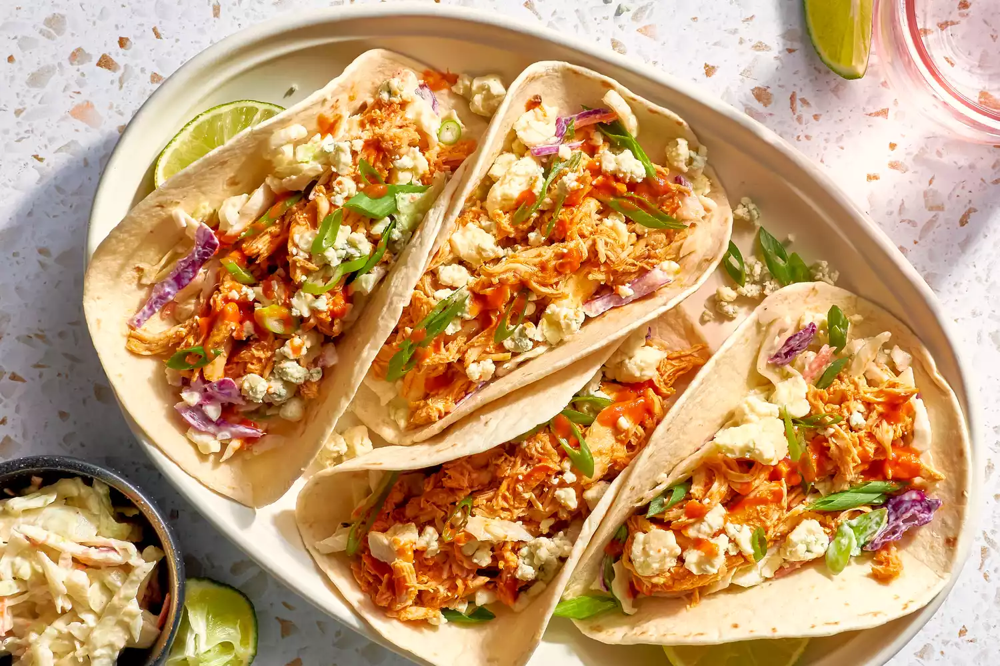

Buffalo Chicken Tacos
Ingredients:
- 6 tablespoons (3/4 stick) unsalted butter
- 1/2 cup hot sauce, such as Franks RedHot or Cholula
- 1/2 teaspoon garlic powder
- 1 small or 1/2 large plain rotisserie chicken (about 1 3/4 pounds), shredded (about 4 packed cups)
- 3 tablespoons whole milk plain Greek yogurt or sour cream
- tablespoons freshly squeezed lime juice (about 1 medium lime)
- 1 tablespoon olive oil
- 1/2 teaspoon kosher salt
- 1/4 teaspoon freshly ground black pepper
- 4 packed cups (10 ounces) coleslaw mix
- 12 (6-inch) flour tortillas
- 2 green onions, thinly sliced
- 4 ounces blue cheese, crumbled (about 1 cup)
Instructions
- Make the Buffalo chicken:
Microwave the butter in a large microwave-safe bowl in 4 to 6 (10-second) bursts until just melted. Add the hot sauce and garlic powder and whisk until combined. Add the shredded chicken and toss to coat.
Alternatively, melt the butter in a small saucepan over medium-low heat. Turn off the heat and add the hot sauce and garlic powder, then transfer to a large bowl and combine with the chicken. - Make the coleslaw:
Place the Greek yogurt or sour cream, lime juice, olive oil, salt, and pepper in a large bowl and whisk to combine. Add the coleslaw mix and toss to coat. - Warm the tortillas:
Stack the tortillas on a microwave-safe plate and cover with a damp paper towel. Microwave until warm, 30 to 45 seconds. Wrap the stack in a clean kitchen towel or aluminum foil to keep warm until ready to use. - Assemble the tacos:
To assemble the tacos, top the warmed tortillas with coleslaw. Top with the buffalo chicken and garnish with the scallions and blue cheese.